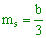

Ejercicios interactivos de rectas paralelas
Elige la opción correcta en cada caso:
1Calcula una recta paralela a la recta r ≡ y = −2x + 1 que pase por el punto (4, −1)
La pendiente de la recta r es mr = −2. Como tenemos que hallar una recta paralela a ésta, sus pendientes han de coincidir. Así que la pendiente de la nueva recta s es también ms = −2.
Como tenemos la pendiente de la recta que queremos calcular y un punto por el que pasa, podemos utilizar la ecuación punto-pendiente.
y − y1 = m (x − x1)
y − (−1) = −2 (x − 4)
y = −2x + 8 − 1
s ≡ y = −2x + 7
2Calcula una recta paralela a la recta que pase por el punto (−2, 1)
La pendiente de la recta r es . Como tenemos que hallar una recta paralela a ésta, sus pendientes han de coincidir. Así que la pendiente de la nueva recta s es también  .
.
Como tenemos la pendiente de la recta que queremos calcular y un punto por el que pasa, podemos utilizar la ecuación punto-pendiente.
3Calcula una recta paralela a la recta r ≡ 3x + 2y − 7 = 0 que pase por el punto (0, −3)
La recta r viene dada por su ecuación general, para conocer cuál es su pendiente tenemos que pasarla a forma explícita. Para ello basta despejar la y:
La pendiente de la recta r es . Como tenemos que hallar una recta paralela a ésta, sus pendientes han de coincidir. Así que la pendiente de la recta s, paralela a la recta r, es también .
Como tenemos la pendiente de la recta que queremos calcular y un punto por el que pasa, podemos utilizar la ecuación punto-pendiente.
4La recta paralela a la recta r ≡ x − y + 4 = 0 que pasa por el punto (−2, 1), también pasa por el punto:
La recta r viene dada por su ecuación general, para conocer cuál es su pendiente tenemos que pasarla a forma explícita. Para ello basta despejar la y:
r ≡ y = x + 4
La pendiente de la recta r es mr = 1. Como tenemos que hallar una recta paralela a ésta, sus pendientes han de coincidir. Así que la pendiente de la recta s, paralela a la recta r, es también ms = 1.
Como tenemos la pendiente de la recta que queremos calcular y un punto por el que pasa, podemos utilizar la ecuación punto-pendiente.
y − y1 = m (x − x1)
y − 1 = 1 (x + 2)
y = x + 2 + 1
s ≡ y = x + 3
Sustituyendo las coordenadas de los puntos en la recta, tenemos:
 (−1, 2)
(−1, 2)
2 = −1 + 3
Así que la recta s también pasa por el punto (−1, 2).
Podemos comprobar que la recta s no pasa por los otros dos puntos:
 (−3, 1)
(−3, 1)
1 ≠ −3 + 3
 (0, −2)
(0, −2)
−2 ≠ 0 + 3
5Comprueba si las rectas r ≡ 2x − 3y − 1 = 0 y s ≡ −6x + 9y − 5 = 0 son paralelas
Para que las rectas r y s sean paralelas, sus coeficientes tienen que ser proporcionales.
Los coeficientes son proporcionales, así que las rectas r y s son paralelas.
6Entre estas rectas, ¿cuál no es paralela a las otras dos? s ≡ 3x − 4y + 2 = 0 t ≡ 8x − 6y − 3 = 0
Para que dos rectas sean paralelas, sus pendientes han de coincidir. Calculemos las pendientes de las tres rectas y veamos cuáles coinciden:

La pendiente de la recta r es
 s ≡ 3x − 4y + 2 = 0
s ≡ 3x − 4y + 2 = 0
Pasamos la recta s a su ecuación explícita:
La pendiente de la recta s es
 t ≡ 8x − 6y − 3 = 0
t ≡ 8x − 6y − 3 = 0
Pasamos la recta t a su ecuación explícita:

La pendiente de la recta t es
Entonces las rectas paralelas son:
7Comprueba si las rectas r ≡ x − 2y + 9 y s: pasa por los puntos (−1, −2) y (7, 2), son paralelas
Para que las rectas sean paralelas, sus pendientes han de coincidir. Calculamos las pendientes de las rectas y vemos si coinciden.
Para hallar la pendiente de la recta r, la pasamos primero a forma explícita:
La pendiente de la recta r es
La recta s que pasa por los puntos (−1, −2) y (7, 2), tiene pendiente:
Como ambas pendientes coinciden, las rectas son paralelas.
8Comprueba si las rectas r: pasa por los puntos (2, −3) y (4, 7) y s: pasa por los puntos (−1, −4) y (5, 2), son paralelas
Para que las rectas r y s sean paralelas, sus pendientes han de coincidir. Calculamos las pendientes de las rectas y vemos si coinciden.
La recta r que pasa por los puntos (2, −3) y (4, 7), tiene pendiente:
La recta s que pasa por los puntos (−1, −4) y (5, 2), tiene pendiente:

Como las pendientes de ambas rectas no coinciden, las rectas no son paralelas.
Contesta a las siguientes cuestiones:
9Calcula k para que las rectas r ≡ kx + 4y − 1 = 0 y s ≡ 5x + 6y − 1 = 0 sean paralelas.
k =
Para que las rectas r y s sean paralelas, sus pendientes deben coincidir. Calculamos las pendientes de ambas rectas, las igualamos y despejamos el valor de k.
La recta r viene dada por su ecuación general, para conocer cuál es su pendiente tenemos que pasarla a forma explícita. Para ello basta despejar la y:
La pendiente de la recta r es
Análogamente, hallamos la pendiente de la recta s:
La pendiente de la recta s es
Igualamos las pendientes y despejamos el valor de k:
10Calcula k para que las rectas r ≡ y = kx + 3 y sean paralelas
k =
La pendiente de la recta r es mr = k.
La recta s viene dada por su ecuación continua, para conocer cuál es su pendiente tenemos que pasarla a forma explícita.

La pendiente de la recta s es .
Igualando las pendientes tenemos que .
11Calcula a y b para que la recta r ≡ ax + 5y − 2 = 0 que pasa por el punto (2, 1) y la recta s ≡ bx − 3y + 2 = 0 sean paralelas
a =, b =
Como la recta r pasa por el punto (2, 1), sustituimos las coordenadas del punto en la recta y despejamos el valor de a:
a · 2 + 5 · 1 − 2 = 0 ⇒ 2a + 5 − 2 = 0 ⇒ 2a = −3 ⇒
La ecuación de la recta r en forma explícita es:
La pendiente de la recta r es  .
.
Pasamos la recta s a forma explícita y hallamos su pendiente.

La pendiente de la recta s es .
Como las rectas r y s tienen que ser paralelas, sus pendientes deben ser iguales. Igualamos las pendientes de ambas rectas y obtenemos así el valor de b:
12Calcula a y b para que la recta que pasa por el punto (3, −2) y la recta s ≡ bx + 3y − 4 = 0 sean paralelas
a =, b =
La ecuación de la recta r viene dada en forma continua. Pasémosla a forma general:
Como la recta r pasa por el punto (3, −2), sustituimos las coordenadas del punto en la recta y obtenemos el valor de a:
La ecuación en forma explícita de la recta r es entonces:
La pendiente de la recta r es mr = 2.
Pasamos ahora la recta s a forma explícita y hallamos su pendiente.
La pendiente de la recta s es .
Como las rectas tienen que ser paralelas, sus pendientes deben ser iguales. Igualamos las pendientes de ambas rectas y obtenemos así el valor de b:
Si tienes dudas puedes consultar la teoría